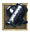
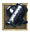

Darkwoods
- 1.
- 2.
- 3.
- 4.
- 5.
- 6.
- 7.
- 8.
- 9.
- 10.
- 11.
- 12.
- 13.
- 14.
- 15.
Whisperdale Quest
Knight of Whisperdale
| Difficulty | Skills |
|---|---|
| Apprentice | Combat |
| NPC Quest Start | Monster | Reward |
|---|---|---|
| Lord Vezryl | Many different creatures |
">
 ">
">
">
">
">
">
">
">

 ">
">
">
">
|
 Speak to Lord Vezryl he will not speak to those not aligned with Whisperdale. You must speak with the Whisperdale Steward. He is located next to the spawn gate.
Speak to Lord Vezryl he will not speak to those not aligned with Whisperdale. You must speak with the Whisperdale Steward. He is located next to the spawn gate.  Welcome to Whisperdale, the grand capital of Darkwood Forest and home to the Night Elves! I'm so glad you decided to pay a visit to Whisperdale after all. The orcs can be, well rough around the edges. *He bows with a flourish* I am humble Steward of Whisperdale. I watch over the city and tend to its needs. Do you know much about our people?
*He clears his throat* We are the Night Elves, also know as the Astari. The city is still...recovering....from the Rune War. It's nothing major, but we could use a hand here or there. Therefore, Vezyl asked me to recruit some visitors to our cause. We can bestow a great gift on you if you decide to help us. 1 extra orb of Dexterity!
*He whispers* You'll be able to obtain 101 orbs in Dexterity. There's really no choice, considering the alternativs... However, once you decide, you cannot change your mind. Choose wisely... Do you wish to align with our city? If you chose to you will be rewarded.
Welcome to Whisperdale, the grand capital of Darkwood Forest and home to the Night Elves! I'm so glad you decided to pay a visit to Whisperdale after all. The orcs can be, well rough around the edges. *He bows with a flourish* I am humble Steward of Whisperdale. I watch over the city and tend to its needs. Do you know much about our people?
*He clears his throat* We are the Night Elves, also know as the Astari. The city is still...recovering....from the Rune War. It's nothing major, but we could use a hand here or there. Therefore, Vezyl asked me to recruit some visitors to our cause. We can bestow a great gift on you if you decide to help us. 1 extra orb of Dexterity!
*He whispers* You'll be able to obtain 101 orbs in Dexterity. There's really no choice, considering the alternativs... However, once you decide, you cannot change your mind. Choose wisely... Do you wish to align with our city? If you chose to you will be rewarded.
- You have gained the dexterity of Krog
- You have gained 500 faction with the city of Whisperdale!
- 2,750 Experience Pool experience may very
Speak to Lord Vezryl, Greetings! Ah.. A loyal servant of Whisperdale... The times are dire, the forces of evil are threatening our fair city. Lotor and his Knights are doing the best they can, but I fear it is not enough. Forthe future of Whisperdale I need a brave warrior to seek out and slay the foul creatures that plague us.. Are you willing to help? Accept his offer to continue. Whisperdale be praised! The task at hand is most dangerous! The nobles and I are convinced that Talazar himself is responsible for the calamitous creatures which haunt our shaded woods! Knowing this, do you still dare stand against this Dark Fiend? Accept to start the quest. Very good! May Whisperdale be saved... It appears you are a ___ adventurer. The task I will give you will test your courage and wisdom. Return to me after Talazar's power has been weakended!
QUEST RECEIVED: Knight of Whisperdale, Lord Vezryl of Whisperdale asks you to slay x amount of Creatures. Head out and kill the required creatue. You will be updated as you kill them. QUEST UPDATE: Kill x amount more creature for Lord Vezryl of Whisperdale
QUEST UPDATE: Knight of Whisperdale, Return to Lord Vezryl in Whisperdale!
Whisperdale be praised! You have made the elfen lands more secure from the evil plague... Talk to Lady Vezryl at our lodge about further rewards for your service. It is a short journey north from Whisperdale. Thank you again.
You have gained faction with Krog for your heroic work! See Lady Targon of Maraket about a reward.
- You have gained X amount of faction with the city of Whisperdale
- Ramdon Amounts Experience Pool experience may very
Follow the path north to Lord Vezryl Estate and Speak to Lady Vezryl. Greetings loyal warrior of Vezrl... Honored servant. Here is your reward for your loyal patronage. Continue to serve. Repeat this quest gaining Faction Points to earn the complete Whisperdale Set.
- 500 Faction Points Necklace of Whisperdale
- 800 Faction Points Ring of Whisperdale
- 1300 Faction Points Bracers of Whisperdale
- 1800 Faction Points Belt of Whisperdale
- 2300 Faction Points Helm of Whisperdale
- 2800 Faction Points Boots of Whisperdale
- 3300 Faction Points Cloak of Whisperdale
- 3800 Faction Points Guardian of Whisperdale
- 4300 Faction Points Leggings of Whisperdale
- 4800 Faction Points Armor of Whisperdale
Quest Complete
A Shadow Roams the Lands
| Difficulty | Skills |
|---|---|
| Apprentice | Combat |
| NPC Quest Start | Reward |
|---|---|
| Varios |

|
 Speak to Varios, He ask you what brings you to Whisperdale. *Before you can anwser he cuts you off* Hopes its not for hunting. Undead creatures called shadows stalk the hunting grounds.
Lord Vezryl's Estate. It was fine shady forest and wooded vale teeming with full fleshed deer. Now you'd be lucky to take a scrawny doe, much less a stag. He often daydreams that he could visit again. You accect to hunt the Shadows for him.
Speak to Varios, He ask you what brings you to Whisperdale. *Before you can anwser he cuts you off* Hopes its not for hunting. Undead creatures called shadows stalk the hunting grounds.
Lord Vezryl's Estate. It was fine shady forest and wooded vale teeming with full fleshed deer. Now you'd be lucky to take a scrawny doe, much less a stag. He often daydreams that he could visit again. You accect to hunt the Shadows for him.
QUEST RECEIVED: A Shadow Roams the Lands, Eliminate 25 Shadows for Varios of Whisperdale.
Journey on the road leading out of the city. Continue north at the fork to Lord Vezryl's Estate. West from there you will find foul apparitions to slake you courage.
 Once you find them kill 25 of them. You will be updated as you kill them. You've killed 25 Shadows for Varios. When you have slain 25 return to Varios.
Once you find them kill 25 of them. You will be updated as you kill them. You've killed 25 Shadows for Varios. When you have slain 25 return to Varios.
QUEST RECEIVED: A Shadow Roams the Lands, Return to Varios with news of the Shadow extermination!
He is suprised that you accomplished this task. You have proven him wrong. He will soon venture to the lodge to meet his friend Burslord. They have been planning a trip for some time. He thanks you with a trifle of gold.
- Gold Received: 2,500
- 27,500 Experience Pool experience may very
Varios can now venture to Lord Vezryl's estate! He paid you handsomely.
Quest Complete
Time for Revenge
| Difficulty | Skills |
|---|---|
| Apprentice | Combat |
| NPC Quest Start | Reward |
|---|---|
| Varios |
|
After completeing A Shadow Roams the lands speak to Varios, to the east lies a hive of termigons. He was helping his friend Burslord to collect some material for a project
when their queen fled with his timepiece and buried it among the mounds. He is curious whether you can kill the Termigon Queen and rturn his timepiece.
QUEST RECEIVED: Time for Revenge, Find the termigon hive, destroy the Queen, reclaim Varios' time piece.
Head east across the river then south around the mountain. This is the Termigon hive. Find the Termigon Queen
 with in this area and kill it. There is a chance you won't find the timepiece when you kill the queen You search the body, but don't find anything.
with in this area and kill it. There is a chance you won't find the timepiece when you kill the queen You search the body, but don't find anything.
QUEST UPDATE: Time for Revenge, You found Varios's Timepiece! Return it to him in Whisperdale.
It would be quite rude fi there was no compensation for your efforts. You must visit the hunting lodge and speak with my friend Burslord. He is eager to meet you and see if I have been truthful.
- Gold Received: 5,000
- 38,500 Experience Pool experience may very
You havce earned Varios respect and his gold. He commends you to Burslord.
Quest Complete
Termigon Armor
| Difficulty | Skills |
|---|---|
| Apprentice | Combat |
| NPC Quest Start | Reward |
|---|---|
| Burslord |

|
After completeing time for revenge speak to Burslord at the hunting lodge, Varios in Whisperdale speaks very highly of you. Perhaps you can return to the Termigon hive and do me a service as well. I am working on a new very strong material to be used in the crafting of armor. The material is only found in the stomach lining of some Termigon Warriors around the hive to the south. Return to the hive and retrieve 20 stomach linings for my work.
- OPTION: 1 This sounds too messy....
- OPTION: 2 I am too tired to help...
- OPTION: 3 I am too hungry to assist you right now...
OPTION: 1
Nonsense. There is usually nothing in the stomachs! They regurgitate it to their horrid little larval spawn. Oh, what was I saying? Yes... to remove the lining simply cut a small hole in the stomach once you remove it... It falls out in one whole piece. Fascinating, isn't it?
OPTION: 2
Traveling does make one weary, doesn't it? Ahhh... It is as if I am living my youthful days again! I remember the exhaustion well... Here. Have some pie. Mother never sent me without it! I will see you back soon with those stomach linings, yes?
- ITEM RECEIVED: Apple Pie Slice

OPTION: 3
Well, we can't have you off adventuring on a nempty stomach! *He produces a steaming bowl of beef stew* There now, this should help. I will see you back soon with those stomach linings, yes?
- ITEM RECEIVED: Beef Stew

QUEST RECEIVED: Termigon Armor, Collect 20 stomach linings of Termigon Warriors for Burslord, a huntsmand who lives east of Autumn.
Head south back to the Termigon Hive and kill Termigon Warriors. You will need to kill more then 20, casue you will get a dialogue that says. You try to remove the stomach lining, but it shreds to pieces.. When you have successfully removed a stomach you will be updated. You've collected 20 stomach linings for Burslord!
QUEST UPDATE: Termigon Armor, you've collect enough material. Return to Burslord at the Hunting Lodge.
With these Termigon stomach linings he can fashion many pairs of armored gloves! Take these prototype mittens as a reward for your fine service! Now, rest awhile at our fine lodge...
- ITEM RECEIVED: Termigon Battle Mittens
- 44,000 Experience Pool experience may very
Quest Complete
Burslord gave you Termigon Battle Mittens.